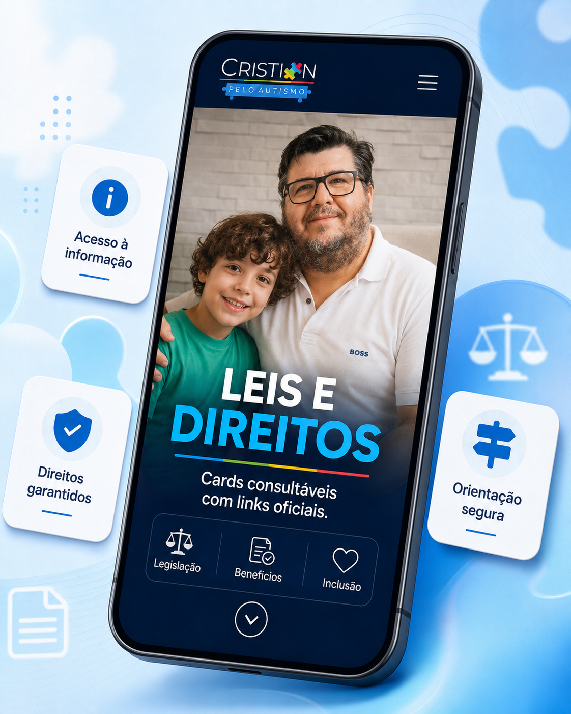

Esta seção reúne leis e projetos de 2017 a 2023, período em que Cristian Marcelo Schibelsky atuou na assessoria técnica parlamentar, contribuindo na organização, elaboração e acompanhamento de propostas voltadas ao autismo, à pessoa com deficiência, à acessibilidade, à inclusão e às famílias atípicas.

Foram removidas desta página as normas posteriores a 2023 ou de autoria parlamentar fora do período de atuação técnica informado.